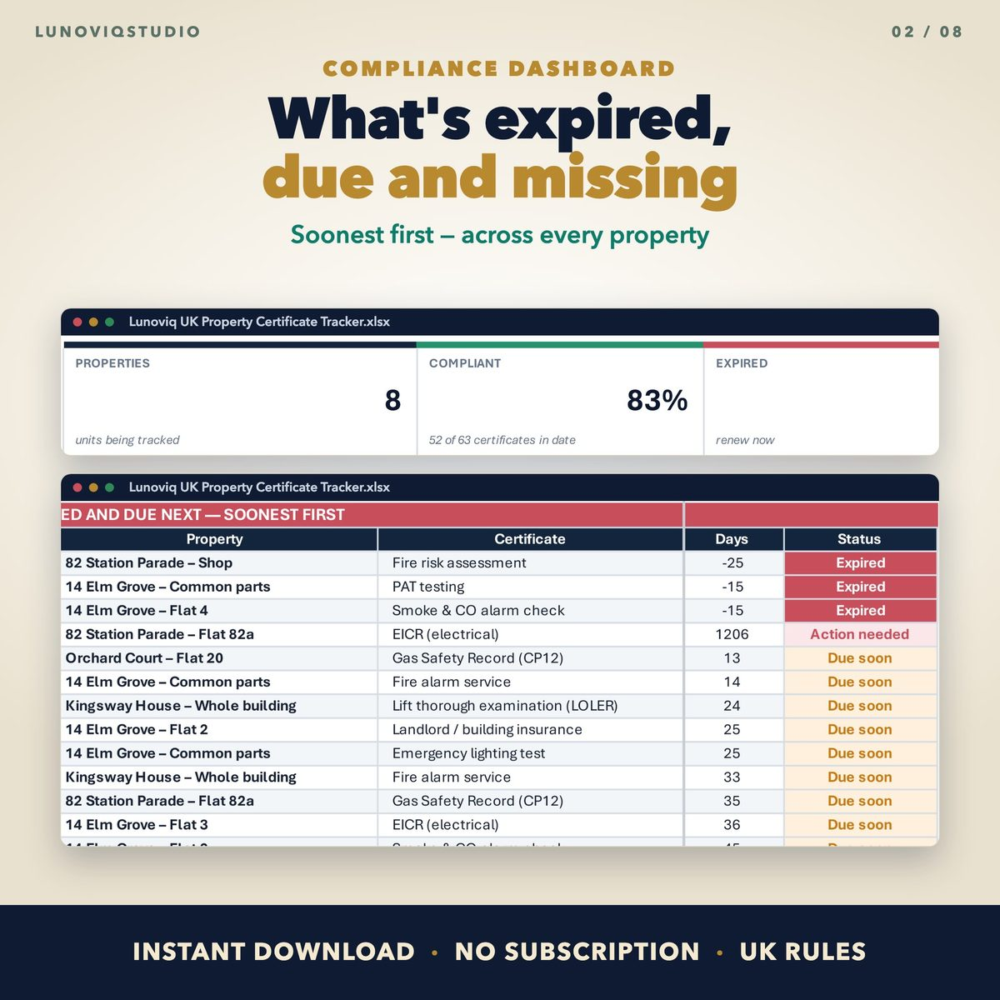
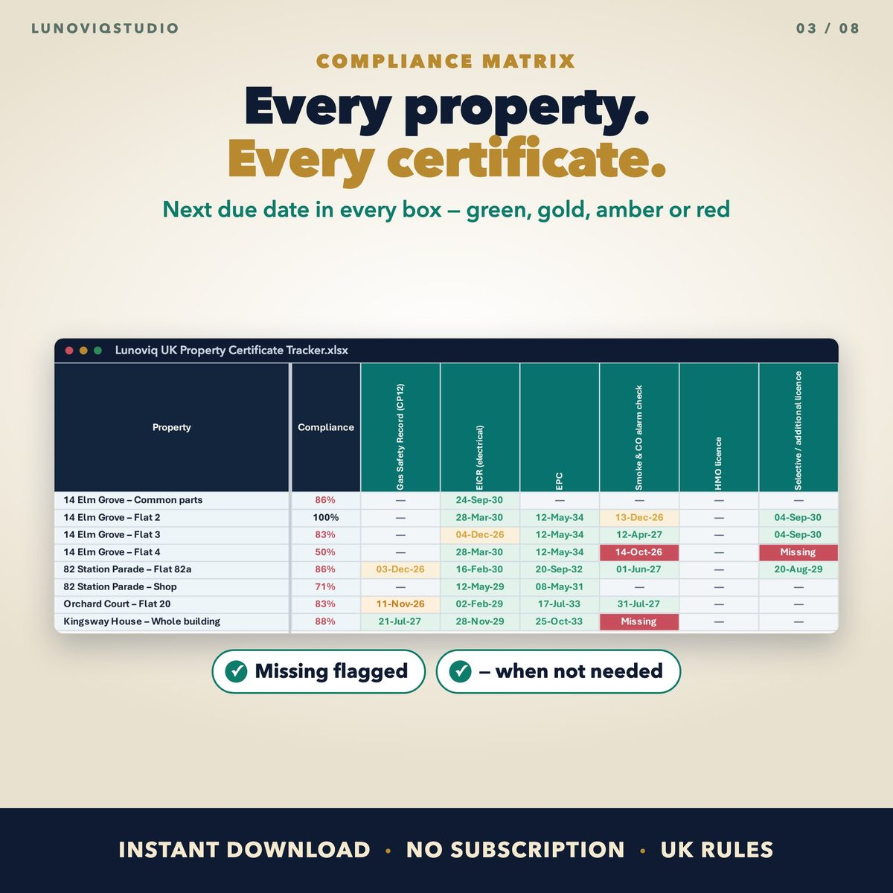
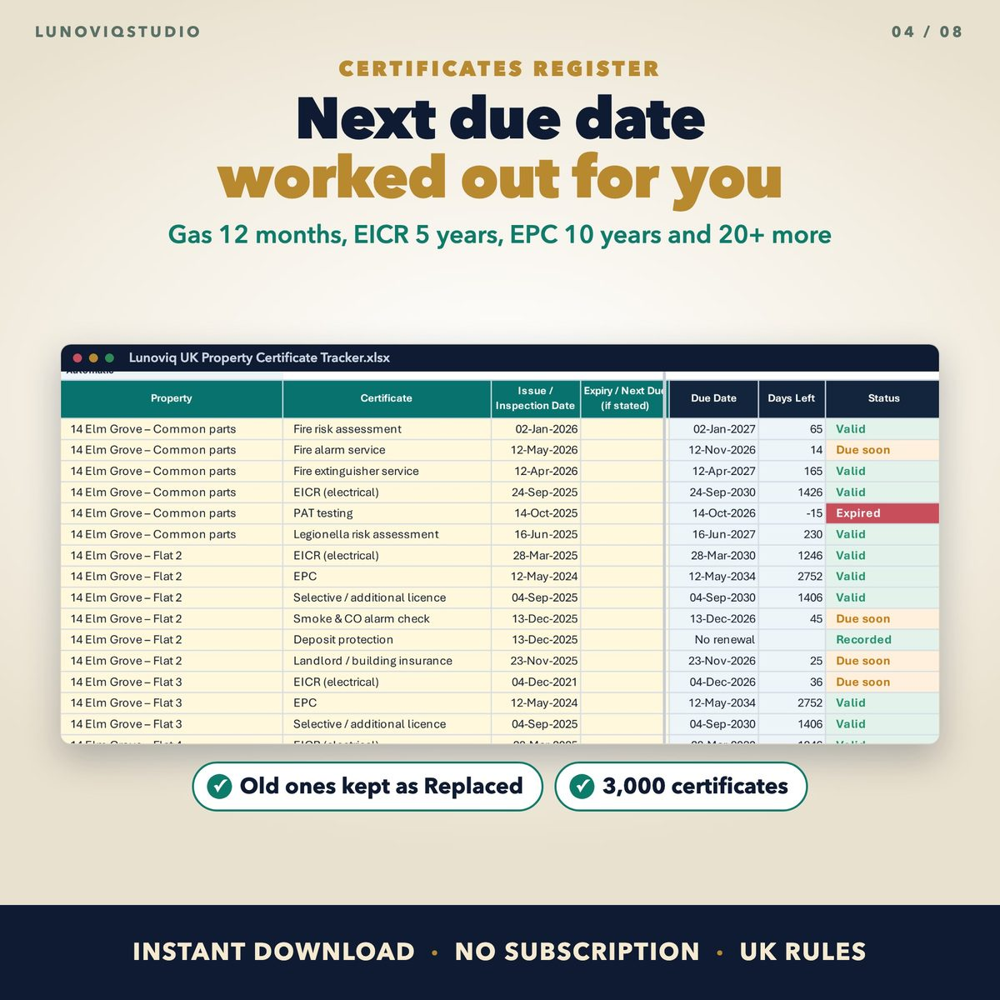
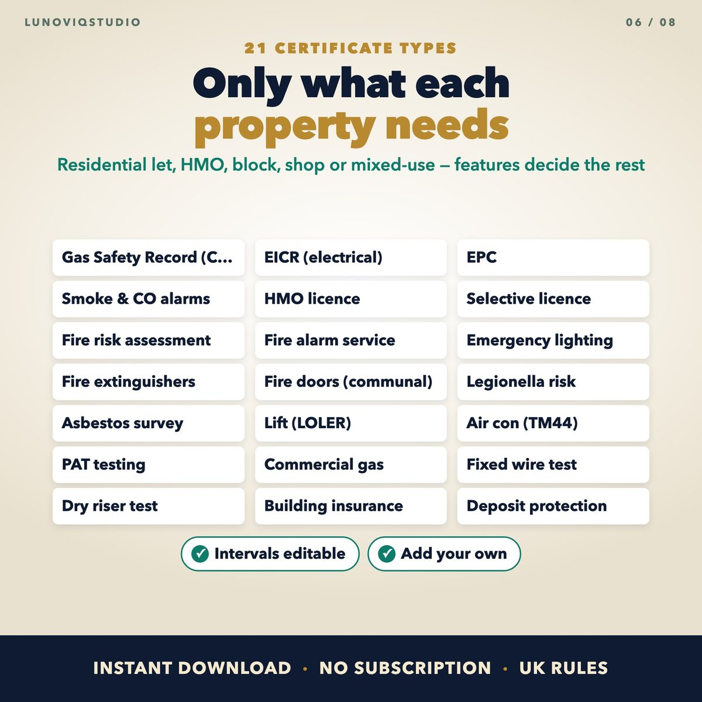

Home › Spreadsheets › UK Property Certificate Tracker
UK Property Certificate Tracker
Keep every landlord certificate in date: gas safety, EICR, EPC, fire, licences and more, for every flat, shop and block.
Made for: Landlords, block managers and letting agents with residential lets, HMOs, common parts, shops or mixed-use buildings.
Get it on EtsyWhat it doesWhat it does
Dashboard
What has expired, what is due in the next 60 days, what is missing, and your overall compliance percentage.
Compliance matrix
Every property against every certificate type, colour-coded.
Next due dates worked out
Type the issue date. The next due date follows the certificate type: gas 12 months, EICR 5 years, EPC 10 years and 20+ other types.
Property types decide what is needed
Gas supply, lift, building height, HMO or council licence decide which certificates each property needs.
Room to grow
Up to 500 properties and 3,000 certificates. Prints on A4.
See it




What you get
- Blank Excel workbook
- Sample workbook
- Google Sheets version (copy link in the PDF)
- Quick-start PDF
Instant download. One-off price, no subscription, no macros.
Questions
Does it read my certificate PDFs?
This version is typed in. The AI Certificate Reader version reads PDFs and fills in the rows for you.
Does it cover Wales and Scotland?
It is built around the rules in England. Rules differ in Wales, Scotland and Northern Ireland, but you can edit the certificate types and intervals.